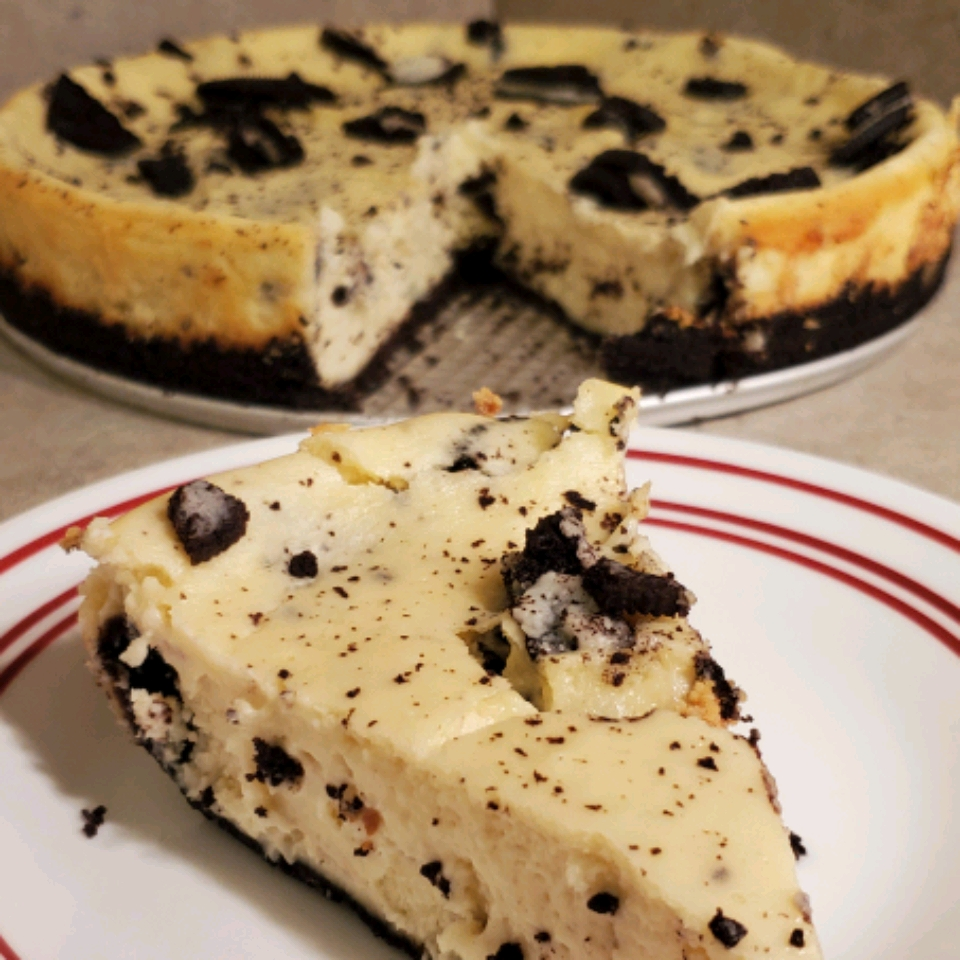

Oreo Cheesecake

Description
And another dessert with oreos in it.
I guess it is not that obvious that I love oreos, right ?
But, this time, it is a cheesecake in which I also like to eat.
So, it is a win-win for me, hitting two birds with one stone.
Link to the source
Ingredients
- 1 (15.5 ounce) package OREO Cookies, divided
- ⅓ cup butter or margarine, melted
- 3 (8 ounce) packages PHILADELPHIA Cream Cheese, softened
- ¾ cup sugar
- 1 cup BREAKSTONE'S or KNUDSEN Sour Cream
- 1 teaspoon vanilla
- 4 eggs
Steps
- Heat oven to 350 degrees F.
- Crush 28 cookies finely; coarsely chop remaining cookies. Mix crushed cookies with butter; press onto bottom and 2 inches up side of 9-inch springform pan.
- Beat cream cheese and sugar in large bowl with mixer until blended. Add sour cream and vanilla; mix well. Add eggs, 1 at a time, mixing on low speed after each just until blended. Stir in chopped cookies. Pour into crust.
- Bake 55 min. to 1 hour or until center is almost set. Run knife around rim of pan to loosen cake; cool before removing rim. Refrigerate 4 hours.